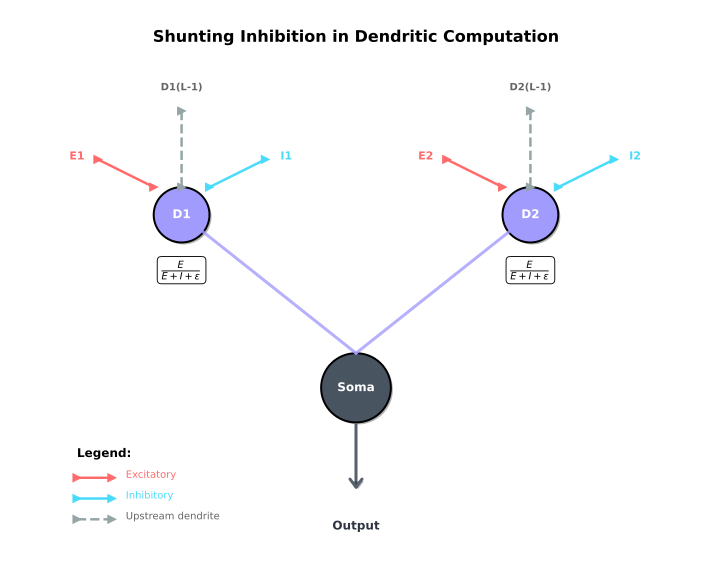
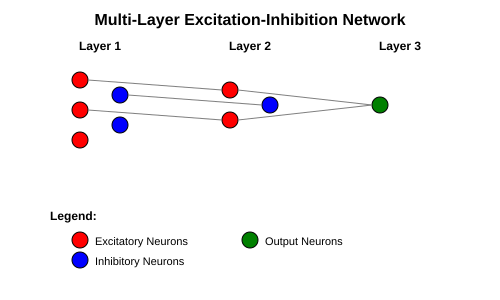

Architecture and Models
This comprehensive guide covers the network architectures and model types available in the Dendritic Modeling Framework, along with their biological foundations and practical usage.


Figure 2 Shunting Inhibition Mechanism: Multi-dendrite neurons implementing divisive normalization. Each dendrite receives excitatory and inhibitory inputs, computes E/(E+I+ε) locally, and dendrites can receive inputs from previous dendritic layers. The soma integrates processed outputs from all dendrites.
Biological Foundations
The framework is built on several key biological principles that inform both the architecture design and computational mechanisms.
Shunting Inhibition
The core computational mechanism implements divisive normalization found throughout the nervous system:
Where: - \(E\) = sum of excitatory synaptic inputs - \(I\) = sum of inhibitory synaptic inputs - \(\epsilon\) = small constant preventing division by zero
This mechanism provides several key computational benefits:
Gain Control: Automatic adjustment of response sensitivity based on input strength
Normalization: Maintains output in bounded range regardless of input magnitude
Contrast Enhancement: Emphasizes differences between inputs
Adaptation: Dynamically adjusts to changing input statistics
Dendritic Computation

Figure 3 Dendritic Neuron Structure: Multi-branch architecture where each dendrite receives excitatory (red) and inhibitory (blue) synaptic inputs, performs local computation, and outputs to the soma for integration.
Biological neurons perform complex computations through their dendritic trees:
Local Processing: Each dendrite performs independent computations on its inputs
Hierarchical Integration: Dendrites can receive inputs from other dendrites
Spatial Organization: Synaptic inputs are spatially distributed across the dendritic tree
Temporal Dynamics: Dendritic processing includes temporal integration and filtering
Dale’s Principle
The framework maintains biological realism through Dale’s principle:
Excitatory Neurons: Can only make excitatory synaptic connections
Inhibitory Neurons: Can only make inhibitory synaptic connections
Population Separation: Distinct excitatory and inhibitory neural populations
This separation enables:
Realistic Connectivity: Biologically plausible connection patterns
E/I Balance: Dynamic balance between excitation and inhibition
Emergent Dynamics: Complex network behaviors arising from simple rules
Synaptic Organization
The framework models realistic synaptic organization:
Synaptic Densities: Based on neurobiological measurements
Connection Patterns: Realistic connectivity matrices
Synaptic Plasticity: Activity-dependent connection strength changes
Spatial Constraints: Distance-dependent connectivity probabilities
Network Architectures
The framework provides several network architectures, each suited for different computational tasks and biological modeling goals.
Excitation-Inhibition Networks
The core architecture implements biologically-inspired excitation-inhibition dynamics:


Figure 4 Multi-Layer E/I Network: Shows excitatory (red) and inhibitory (blue) neuron populations across multiple layers. Each excitatory neuron implements dendritic computation with shunting inhibition.
Key Features:
Separate excitatory and inhibitory populations per layer
Dendritic branching with configurable branch factors
Flexible connectivity patterns (E→E, E→I, I→E, I→I)
Somatic and dendritic synapses
Reactivation mechanisms for enhanced plasticity
Basic Usage:
from dendritic_modeling.networks import ExcitationInhibitionNetwork
from dendritic_modeling.config import TransferFunctionParams
# Create transfer function parameters
transfer_params = TransferFunctionParams(
input_mode=0,
multiplicative=True,
shunting_inhibition=True
)
# Create E/I network
ei_network = ExcitationInhibitionNetwork(
input_dim=784,
transfer_params=transfer_params.asdict(),
excitatory_layer_sizes=[200, 100, 10],
inhibitory_layer_sizes=[100, 50, 0],
excitatory_branch_factors=[10, 5, 1],
inhibitory_branch_factors=[5, 3, 0],
ee_synapses_per_branch_per_layer=[15, 10, 1],
ei_synapses_per_branch_per_layer=[8, 5, 0],
ie_synapses_per_branch_per_layer=[3, 2, 0],
ii_synapses_per_branch_per_layer=[],
reactivate=True,
somatic_synapses=True
)
Configuration Parameters:
excitatory_layer_sizes: Number of excitatory neurons per layer
inhibitory_layer_sizes: Number of inhibitory neurons per layer
excitatory_branch_factors: Dendritic branches per excitatory neuron
inhibitory_branch_factors: Dendritic branches per inhibitory neuron
ee_synapses_per_branch_per_layer: Excitatory→excitatory connections per branch
ei_synapses_per_branch_per_layer: Excitatory→inhibitory connections per branch
ie_synapses_per_branch_per_layer: Inhibitory→excitatory connections per branch
ii_synapses_per_branch_per_layer: Inhibitory→inhibitory connections per branch
reactivate: Enable reactivation mechanisms
somatic_synapses: Include direct somatic connections
Multi-Layer Perceptron (MLP)
Standard fully-connected networks with optional dendritic processing:
from dendritic_modeling.networks import MLP
# Standard MLP
mlp_network = MLP(
input_dim=784,
hidden_dims=[512, 256, 128],
output_dim=10,
activation='relu',
dropout=0.2,
batch_norm=True
)
# MLP with dendritic processing
dendritic_mlp = MLP(
input_dim=784,
hidden_dims=[512, 256, 128],
output_dim=10,
activation='relu',
use_dendritic_processing=True,
dendritic_params={
'branch_factors': [5, 3, 1],
'shunting_inhibition': True
}
)
Convolutional Networks
Convolutional architectures with dendritic processing capabilities:
from dendritic_modeling.networks import ConvNet
# Standard CNN
conv_network = ConvNet(
input_channels=1,
conv_layers=[
{'out_channels': 32, 'kernel_size': 3, 'stride': 1, 'padding': 1},
{'out_channels': 64, 'kernel_size': 3, 'stride': 2, 'padding': 1},
{'out_channels': 128, 'kernel_size': 3, 'stride': 2, 'padding': 1}
],
fc_layers=[256, 10],
activation='relu',
dropout=0.2
)
# CNN with dendritic layers
dendritic_conv = ConvNet(
input_channels=1,
conv_layers=[
{'out_channels': 32, 'kernel_size': 3, 'stride': 1, 'padding': 1},
{'out_channels': 64, 'kernel_size': 3, 'stride': 2, 'padding': 1}
],
fc_layers=[256, 10],
use_dendritic_fc=True,
dendritic_params={
'branch_factors': [8, 4],
'excitatory_inhibitory_ratio': 0.8
}
)
Vision Transformers
Transformer architectures with dendritic attention mechanisms:
from dendritic_modeling.networks import DendriticViT
# Vision Transformer with dendritic attention
vit_network = DendriticViT(
image_size=224,
patch_size=16,
num_classes=1000,
dim=768,
depth=12,
heads=12,
mlp_dim=3072,
use_dendritic_attention=True,
dendritic_attention_params={
'branch_factors': [4, 2],
'shunting_inhibition': True,
'attention_dropout': 0.1
}
)
Hybrid Architectures
Combining different network types for optimal performance:
from dendritic_modeling.networks import HybridNetwork
# CNN backbone with dendritic head
hybrid_network = HybridNetwork(
backbone=conv_network,
head=ei_network,
backbone_output_dim=256,
head_input_dim=256
)
# Multi-modal architecture
multimodal_network = HybridNetwork(
vision_backbone=conv_network,
text_backbone=transformer_network,
fusion_head=ei_network,
fusion_strategy='concatenate'
)
Input Transformation Networks
Specialized networks for preprocessing inputs before dendritic processing:

Figure 5 Input Network Architecture: Shows how input networks transform raw inputs into excitatory and inhibitory signals for dendritic processing.
from dendritic_modeling.networks.input_transform import (
MLPInputTransform,
ConvInputTransform,
AttentionInputTransform
)
# MLP-based input transformation
mlp_input_net = MLPInputTransform(
input_dim=784,
hidden_dims=[512, 256],
output_dim=128,
excitatory_ratio=0.8
)
# Convolutional input transformation
conv_input_net = ConvInputTransform(
input_channels=3,
conv_layers=[
{'out_channels': 64, 'kernel_size': 7, 'stride': 2},
{'out_channels': 128, 'kernel_size': 3, 'stride': 1}
],
output_dim=256
)
# Attention-based input transformation
attention_input_net = AttentionInputTransform(
input_dim=512,
attention_heads=8,
output_dim=256,
use_dendritic_attention=True
)
Model Types
The framework provides high-level model wrappers that combine networks with task-specific components.
Classification Models
Models designed for classification tasks with cross-entropy loss:
from dendritic_modeling.models import Classifier
# Basic classifier
classifier = Classifier(
core_network=ei_network,
encoder_network=None,
decoder_network=None
)
# Classifier with input preprocessing
classifier_with_encoder = Classifier(
core_network=ei_network,
encoder_network=mlp_input_net,
decoder_network=None
)
# Multi-class classifier with custom loss
multiclass_classifier = Classifier(
core_network=ei_network,
encoder_network=conv_input_net,
decoder_network=None,
loss_function='focal_loss',
num_classes=100
)
Key Features:
Automatic loss computation (cross-entropy, focal loss, etc.)
Built-in accuracy metrics
Support for multi-class and multi-label classification
Optional label smoothing and temperature scaling
Prediction methods (deterministic and probabilistic)
Regression Models
Models designed for regression tasks with MSE or MAE loss:
from dendritic_modeling.models import Regressor
# Basic regressor
regressor = Regressor(
core_network=ei_network,
encoder_network=None,
decoder_network=None,
output_dim=1
)
# Multi-output regressor
multioutput_regressor = Regressor(
core_network=ei_network,
encoder_network=conv_input_net,
decoder_network=None,
output_dim=10,
loss_function='mse'
)
# Robust regressor with custom loss
robust_regressor = Regressor(
core_network=ei_network,
encoder_network=None,
decoder_network=None,
output_dim=1,
loss_function='huber',
huber_delta=1.35
)
Key Features:
Multiple loss functions (MSE, MAE, Huber, quantile)
Support for single and multi-output regression
Built-in evaluation metrics (R², RMSE, MAE)
Optional output normalization
Uncertainty quantification capabilities
Generative Models
Models for generative tasks including autoencoders and VAEs:
from dendritic_modeling.models import Autoencoder, VAE
# Dendritic autoencoder
autoencoder = Autoencoder(
encoder_network=conv_encoder,
decoder_network=conv_decoder,
latent_dim=128,
use_dendritic_latent=True
)
# Variational autoencoder with dendritic processing
vae = VAE(
encoder_network=conv_encoder,
decoder_network=conv_decoder,
latent_dim=128,
use_dendritic_encoder=True,
use_dendritic_decoder=True
)
Transfer Function Parameters
Transfer function parameters control how dendritic computation is performed throughout the network.
from dendritic_modeling.config import TransferFunctionParams
# Default parameters
default_params = TransferFunctionParams()
# Custom parameters
custom_params = TransferFunctionParams(
input_mode=2, # Input network mode
multiplicative=True, # Multiplicative interactions
shunting_inhibition=True, # Enable shunting inhibition
independent_pathways=False, # Separate E/I pathways
excitatory_dim=None, # Excitatory dimension
inhibitory_dim=None # Inhibitory dimension
)
Input Modes:
Mode 0: Direct input (excitatory = inhibitory = input)
Mode 1: Positive-negative split (excitatory = positive, inhibitory = negative)
Mode 2: Input network transformation (learned E/I separation)
Parameter Options:
multiplicative: Enable multiplicative dendritic interactions
shunting_inhibition: Use divisive normalization (E/(E+I+ε))
independent_pathways: Separate excitatory and inhibitory processing paths
excitatory_dim/inhibitory_dim: Explicit dimensionality control
Model Configuration
Models can be configured through Python code or YAML configuration files.
Python Configuration
from dendritic_modeling.config import (
ModelConfig,
CoreNetworkConfig,
EINetParameters,
TransferFunctionParams
)
# Create configuration
config = ModelConfig(
task='classification',
core_network=CoreNetworkConfig(
type='EINet',
parameters=EINetParameters(
input_dim=784,
transfer_params=TransferFunctionParams(
input_mode=0,
multiplicative=True,
shunting_inhibition=True
),
excitatory_layer_sizes=[200, 100, 10],
inhibitory_layer_sizes=[100, 50, 0],
excitatory_branch_factors=[10, 5, 1],
inhibitory_branch_factors=[5, 3, 0],
ee_synapses_per_branch_per_layer=[15, 10, 1],
ei_synapses_per_branch_per_layer=[8, 5, 0],
ie_synapses_per_branch_per_layer=[3, 2, 0],
ii_synapses_per_branch_per_layer=[],
reactivate=True,
somatic_synapses=True
)
)
)
# Create model from configuration
from dendritic_modeling.models import create_model
model = create_model(config)
YAML Configuration
model:
task: classification
core_network:
type: EINet
parameters:
input_dim: 784
transfer_params:
input_mode: 0
multiplicative: true
shunting_inhibition: true
excitatory_layer_sizes: [200, 100, 10]
inhibitory_layer_sizes: [100, 50, 0]
excitatory_branch_factors: [10, 5, 1]
inhibitory_branch_factors: [5, 3, 0]
ee_synapses_per_branch_per_layer: [15, 10, 1]
ei_synapses_per_branch_per_layer: [8, 5, 0]
ie_synapses_per_branch_per_layer: [3, 2, 0]
ii_synapses_per_branch_per_layer: []
reactivate: true
somatic_synapses: true
encoder_network:
type: MLPInputTransform
parameters:
input_dim: 784
hidden_dims: [512, 256]
output_dim: 128
excitatory_ratio: 0.8
decoder_network:
type: identity
Load and use YAML configuration:
from dendritic_modeling.config import load_config
from dendritic_modeling.models import create_model
config = load_config('model_config.yaml')
model = create_model(config)
Advanced Architecture Patterns
Residual Connections
Adding residual connections to dendritic networks:
from dendritic_modeling.networks import ResidualEINet
# E/I network with residual connections
residual_ei_net = ResidualEINet(
input_dim=784,
transfer_params=transfer_params.asdict(),
excitatory_layer_sizes=[200, 200, 10],
inhibitory_layer_sizes=[100, 100, 0],
residual_connections=True,
residual_strategy='add' # 'add' or 'concatenate'
)
Attention Mechanisms
Incorporating attention into dendritic processing:
from dendritic_modeling.networks import AttentionEINet
# E/I network with attention
attention_ei_net = AttentionEINet(
input_dim=784,
transfer_params=transfer_params.asdict(),
excitatory_layer_sizes=[200, 100, 10],
inhibitory_layer_sizes=[100, 50, 0],
attention_heads=8,
attention_dropout=0.1,
use_dendritic_attention=True
)
Modular Architectures
Building modular networks with specialized components:
from dendritic_modeling.networks import ModularEINet
# Modular network with specialized modules
modular_network = ModularEINet(
modules=[
{'name': 'feature_extraction', 'type': 'conv', 'params': {...}},
{'name': 'dendritic_processing', 'type': 'ei_net', 'params': {...}},
{'name': 'classification', 'type': 'mlp', 'params': {...}}
],
connections=[
{'from': 'feature_extraction', 'to': 'dendritic_processing'},
{'from': 'dendritic_processing', 'to': 'classification'}
]
)
Performance Optimization
Computational Efficiency
Optimizing networks for computational efficiency:
# Efficient E/I network configuration
efficient_ei_net = ExcitationInhibitionNetwork(
input_dim=784,
transfer_params=transfer_params.asdict(),
excitatory_layer_sizes=[100, 10],
inhibitory_layer_sizes=[50, 0],
excitatory_branch_factors=[3, 1], # Reduced branching
inhibitory_branch_factors=[2, 0],
ee_synapses_per_branch_per_layer=[5, 1], # Reduced connections
ei_synapses_per_branch_per_layer=[3, 0],
ie_synapses_per_branch_per_layer=[2, 0],
ii_synapses_per_branch_per_layer=[],
reactivate=False, # Disable for efficiency
somatic_synapses=False # Disable for efficiency
)
Memory Optimization
Reducing memory usage for large networks:
# Memory-efficient configuration
memory_efficient_net = ExcitationInhibitionNetwork(
input_dim=784,
transfer_params=transfer_params.asdict(),
excitatory_layer_sizes=[200, 100, 10],
inhibitory_layer_sizes=[100, 50, 0],
excitatory_branch_factors=[5, 3, 1],
inhibitory_branch_factors=[3, 2, 0],
ee_synapses_per_branch_per_layer=[8, 5, 1],
ei_synapses_per_branch_per_layer=[4, 3, 0],
ie_synapses_per_branch_per_layer=[2, 1, 0],
ii_synapses_per_branch_per_layer=[],
reactivate=True,
somatic_synapses=True,
memory_efficient=True, # Enable memory optimizations
gradient_checkpointing=True # Trade compute for memory
)
Model Parameter Management
Parameter Groups
Organizing model parameters for optimized training:
from dendritic_modeling.config import ParamGroupsConfig
# Create parameter groups configuration
param_config = ParamGroupsConfig(
split_params=True,
topk_lr=0.001,
blocklinear_lr=0.001,
reactivation_lr=0.0005,
decoder_lr=0.002
)
# Get parameter groups
param_groups = model.get_param_groups(param_config)
# Use with optimizer
optimizer = torch.optim.Adam(param_groups)
Parameter Initialization
Controlling parameter initialization strategies:
# Custom initialization
ei_network = ExcitationInhibitionNetwork(
input_dim=784,
transfer_params=transfer_params.asdict(),
excitatory_layer_sizes=[200, 100, 10],
inhibitory_layer_sizes=[100, 50, 0],
# ... other parameters ...
init_method='xavier_normal',
weight_threshold=1e-6,
freeze_excitatory_connectivity=False,
freeze_inhibitory_connectivity=False
)
Model Serialization
Saving and loading models:
# Save model
torch.save(model.state_dict(), 'model.pth')
# Load model
model.load_state_dict(torch.load('model.pth'))
# Save entire model configuration
config_dict = model.get_config()
with open('model_config.yaml', 'w') as f:
yaml.dump(config_dict, f)
Next Steps
Now that you understand the architecture and model options:
Training Configuration: Learn about training strategies in Training and Configuration
Analysis Tools: Explore analysis and visualization in Analysis and Visualization
API Reference: See detailed API documentation in API Reference
Examples: Try practical examples in Examples